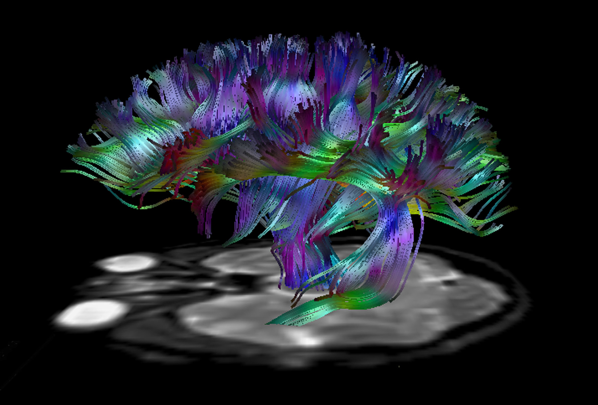
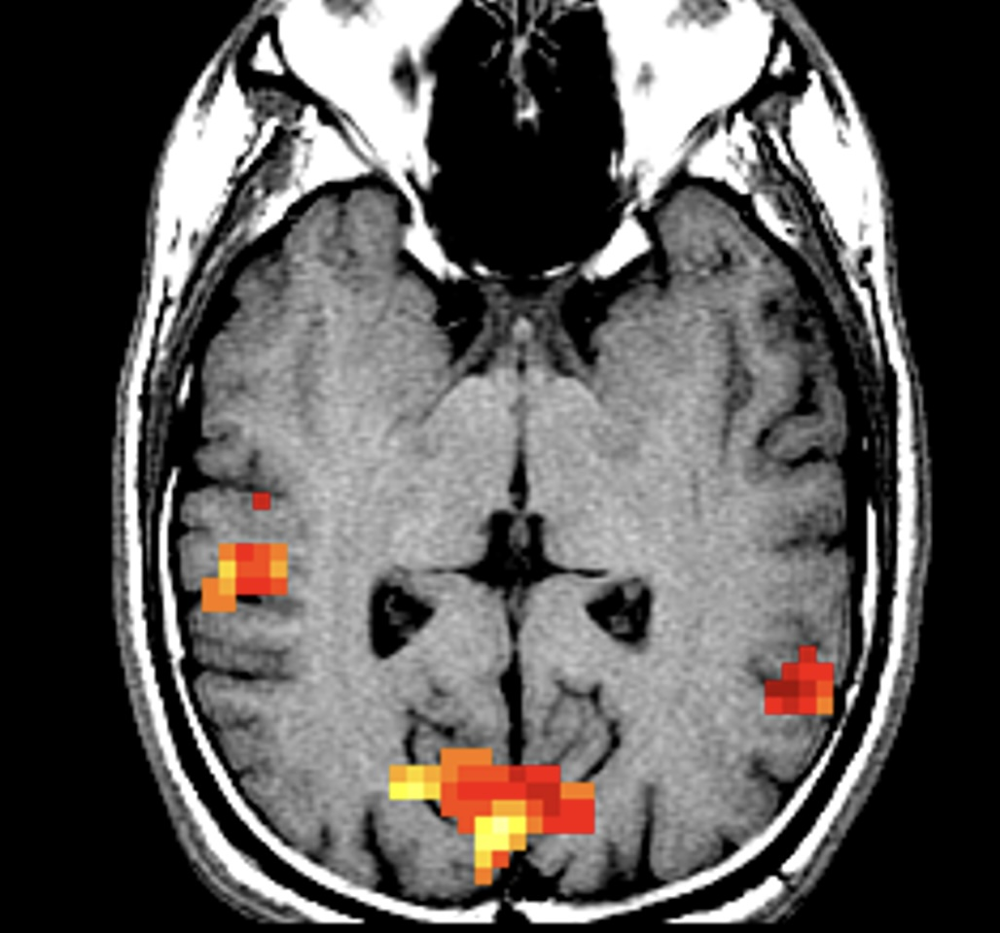

Projects

Brain connectivity
Our group uses MRI to measure the diffusivity of water in brain tissue as a way to study brain microstructure and connectivity.

High field MRI
We are building a new class of radio frequency coil array to improve image quality in 7 Tesla MRI.

Mapping brain function
We use MRI to map changes in brain activity due to sensory stimulation, cognition, movement, and spontaneous fluctuations in the resting state.